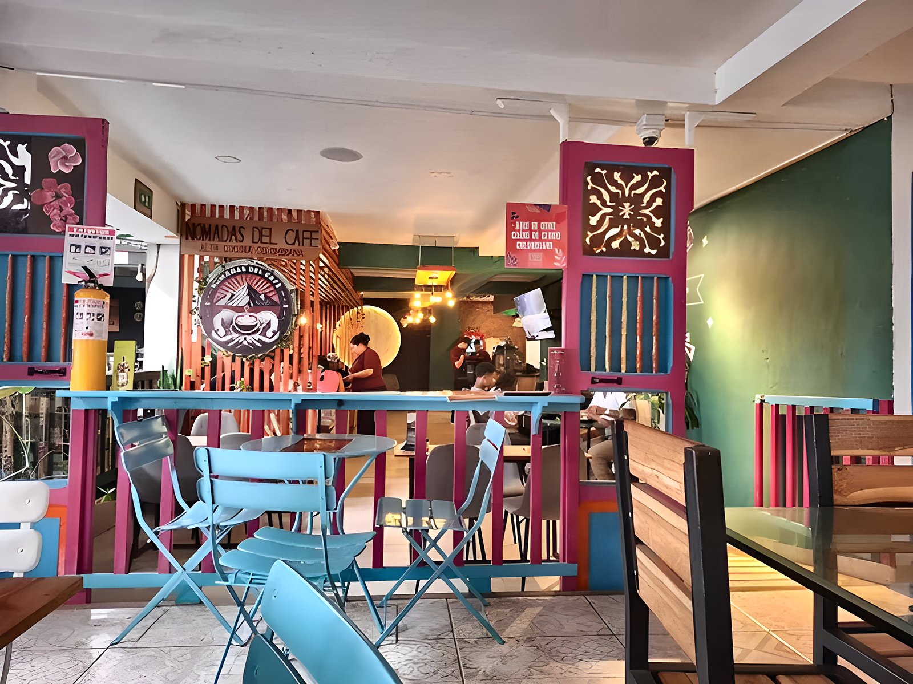
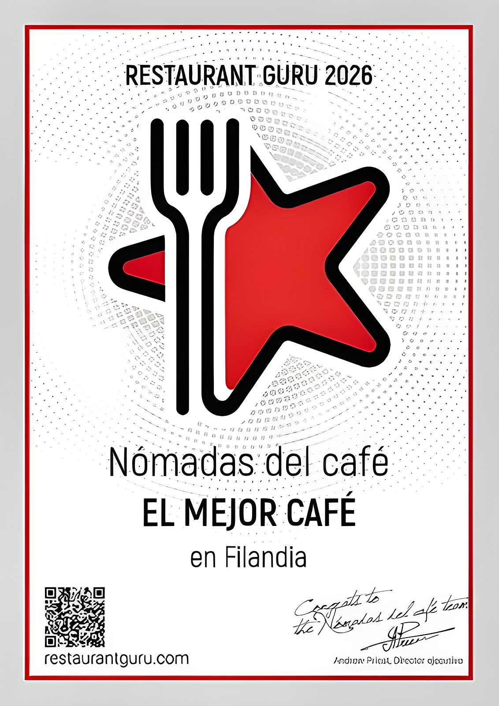

Cocina típica del Quindío, café de origen y cócteles, en una casa de balcones de colores a dos cuadras del parque principal de Filandia.


Recibimos a viajeros y vecinos como en casa, entre barandas de colores, madera y la calidez del Paisaje Cultural Cafetero.
Cada plato nace de ingredientes de la región y recetas de toda la vida; cada taza, de granos cultivados en estas montañas.


¿Cumpleaños, aniversario, grado o esa reunión que llevan meses planeando? Celébralo con nosotros. Te ayudamos a organizar tu mesa, la torta y las velitas para que sea un momento que nadie olvide.

Mojitos, margaritas, piña colada y cócteles de la casa para compartir.
Cupos limitados. Pide el menú completo y el valor por WhatsApp.
Reservar mi cena“Los tacos de birria más ricos que he comido en mi vida”
Ana E. · Tripadvisor“Me encantó la sobrebarriga en salsa criolla”
Christian A. · Tripadvisor“Un ambiente muy familiar y tranquilo para comer y platicar”
Lorena H. · TripadvisorJueves cerrado por descanso en ambas sedes.